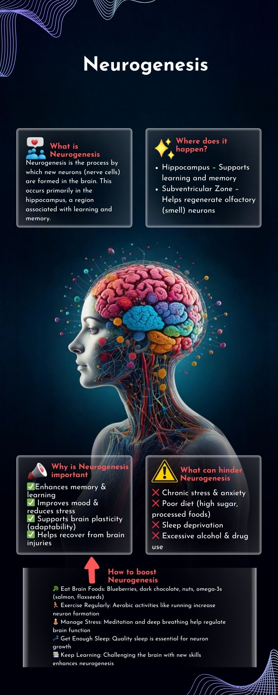

Studies on Neuroscience
Introduction
Welcome to the studies section on Neuroscience and Neurosurgery. Here you will find various infographics that delve into the intricacies of the brain and nervous system.
Infographics
The infographics provide comprehensive insights into brain health, focusing on Alzheimer's disease, brain plasticity, and neurogenesis. The first infographic explains Alzheimer's as a progressive disease that destroys memory and other important mental functions. The second infographic focuses on brain plasticity, highlighting the brain's ability to reorganize itself by forming new neural connections. The third infographic delves into neurogenesis, the process by which new neurons are formed in the brain.
Neurogenesis is the process by which new neurons are formed in the brain. This process is most active during pre-natal development but continues in certain brain regions throughout life. Research on neurogenesis has implications for understanding brain plasticity and treating neurodegenerative diseases.

Brain plasticity, also known as neuroplasticity, is the brain's ability to reorganize itself by forming new neural connections. It allows the brain to adapt to new experiences, learn new information, and recover from injuries. Studies on brain plasticity are crucial for developing rehabilitation strategies for stroke and brain injury patients.

Alzheimer's disease is a progressive neurodegenerative disorder characterized by memory loss, cognitive decline, and behavioral changes. It primarily affects older adults and is the most common cause of dementia. Research on Alzheimer's focuses on understanding its mechanisms, early detection, and developing treatments to slow its progression.